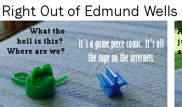
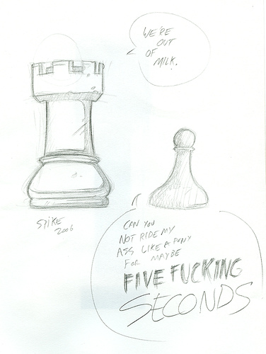
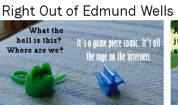

An Homage Strip from David!! LuClick the image below to see the entire strip.

A Fan Sketch from Spike of the critically acclaimed strip Templar, AZ

Stephen’s Flag, as rendered by Obdormio (Stephonian Prime)

An Homage Strip from David!! Lu
Click the image below to see the entire strip.
